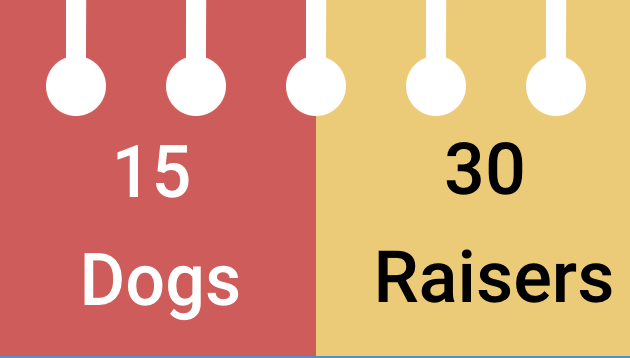
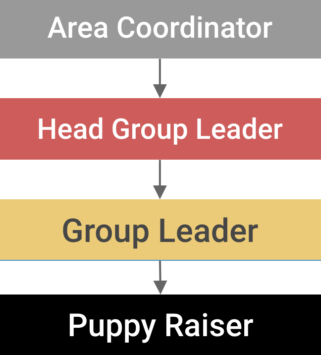
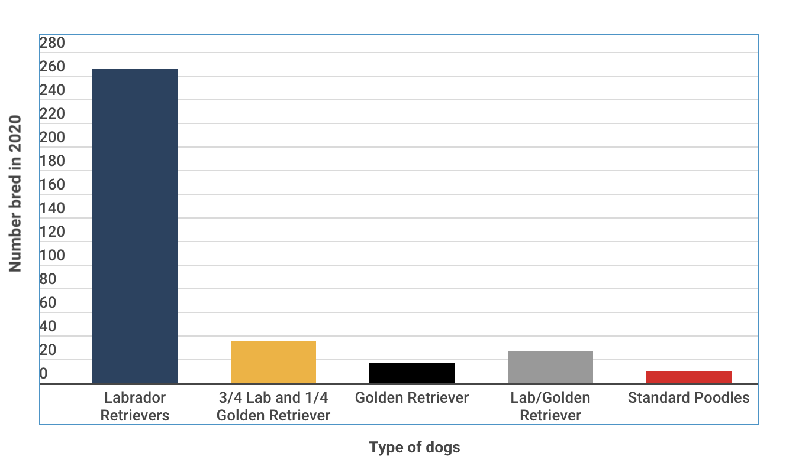

University of Maryland senior animal science major, Shannen Auffarth, has been raising and training yellow lab, Edward, since last December when he was given to her at only eight weeks old.
Auffarth is part of Terps Raising Pups, a chapter of the Guide Dog Foundation for the Blind that was established on campus in September 2016. Like many clubs and organizations at UMD, the pandemic hit Terps Raising Pups hard when the campus shut down in March 2020.
What was supposed to be an extended spring break actually led to online classes, masks, and the world going into lockdown. Terps Raising Pups had to adjust quickly as they overcame several changes in raising over a dozen puppies with no in-person training and no longer being on campus.
More about the foundation
Guide Dog Foundation for the Blind was first established in 1946 in New York. The purpose of the foundation is to "to improve the quality of life for people who are blind, have low vision, or have other special needs," according to their website mission statement.
Dogs are bred at the foundation then sent to chapters, such as the one at UMD, upon requests. There, the dogs are trained and after a certain period of time are sent back to the foundation for more training and a test to determine the career path of the dog, or termination of their role in the program.

How has the pandemic impacted Terps Raising Pups
In the beginning of the pandemic when students were sent home, it was clear Terps Raising Pups members were not going to recieve more puppies from the foundation for the time being, as a result of how COVID-19 affected travel restrictions. That being said, the chapter still had the current puppies they were raising which created challenges.
For starters, since there were restrictions on travel, those who were ready to send their puppies back to the foundation for final training and their test, were unable to. This meant, they like others who potentially just receieved their puppies, they had to bring the dogs home with them.
This created issues for people who may have only been able to raise a dog at school but not at home, such as a family member being allergic or other extenuating circumstances.
Normally, since there are two raisers per puppy, they would split the time training and taking care of it. However, since COVID-19 sent everyone home, it was harder to send the puppy back and forth. This meant, usually, whoever took the dog home just kept it until returning to campus was possible again.
With the puppies being at home instead of campus, this led to issues of training and amount of social interactions the dogs were able to recieve.
Raisers versus Sitters
People who choose to be raisers in Terps Raising Pups are paired and assigned to one puppy. These raisers work together to train and take care of the puppy, splitting equal responsibility.
The raisers, like the sitters, must attend three training classes per month with the puppies in order to learn how to handle them correctly.
The sitters are people available to take care of the puppy when the raisers are busy in class or have other commitments they need to tend to. The sitters essentially babysit the puppy and play with it, until returning it back to the raisers.
How has Terps Raising Pups adapted to these challenges
Those who were unable to take raise their puppie at home since they were no longer at school, either gave it to their co-raiser or another raiser who would then have two dogs. Fortunately, this wasn't a common issue for members.
Though training classes were initially cancelled at the start of the pandemic, they were eventually moved on zoom so raisers could still get help and learn how to handle the dog. Sitters, however, were no longer needed not only because of transportation issues, but because the pandemic forced most people to stay at home. The raiser could have driven to meet the other raiser or sitter if possible, most people did not. Puppy Starters was also used by the chapter during COVID-19. This, which was created before the pandemic began, was used to allow more experienced raisers to take care of the puppies for the beginnng and usually hardest months then give it to members who were raising for the first time.
While Terps Raising Pups managed to communicate through the difficulties of zoom and the pandemic, giving the dogs the social interactions they needed was still difficult.
"Most people just went on longer walks with their puppies or tried taking them to the grocery store and as many places as they could given most places were closed as a result of the pandemic," Auffarth said.
How Terps Raising Pups are doing today
Though the pandemic has not ended and COVID-19 still poses a constant threat to society, UMD returning to campus has enabled Terps Raising Pups to slowly get back to normal
Currently, there are 15 puppies on campus and 30 raisers. There are also about 60-70 members in the process of becoming sitters, as it takes a few months of training before being able to care for the puppies.
There is currently in-person training for members and the puppies, with the requirement of a mask.

What Happens to the Puppies Next?
After Terps Raising Pups trains the puppies, they get sent back to the foundation in New York for formal training. This determines if the puppy can be a good fit for someone who may be blind, visually impaired, or have other special needs.
If the puppy does not pass the test, depending on why, the foundation may place the puppy in another program. Another program can include the dog becoming a bomb sniffer for the police, or a service dog for Veterans who may be suffering from PTSD.
If the foundation finds the puppy failed for reasons that can not be used in another program, like behaviorial issues, the Terps Raising Pups raisers have first priority in adopting, if they wanted.
More about Terps Raising Pups
Within Terps Raising Pups, there are also many ways for a member or person who is interested to gain leadership experience. This existed before COVID-19 but was harder for members during lockdown to get the proper training and time with the dogs in order to have the opportunity.
Each member begins training for several months and attending classes before being able to be in charge of a puppy. New members start as sitters, usually because as a raiser the dog needs to be able to live with the member, and dorms aren't big enough. After spending time as a sitter, the member can continue to be one or can move up to raising a dog.
From here, if interested in leadership, the member can still care for a dog while being a Group Leader. Group Leaders are in the process of moving higher up in teaching classes.
Above the Group Leader is the Head Group Leader which is in charge of teaching classes for sitters and potential applicants. They discuss what the training entails.
After being a Head Group Leader a member can then move up to area coordinator which is assigned to a raiser after recieving dog. They act as the go-to person for any issues the raisers may have and are usually very experience. Area Coordinatros are UMD students and may teach some training classes to the chapter.
The process of recieving a puppy and sending them back to the foundation for formal training is a rolling process, so the number of puppies on campus is constantly changing

Fun Facts
In 2020, Guide Dog Foundation for the Blind bred about 355 puppies. Of these puppies included labrador retrievers, golden retrievers, mixes of the two, and poodles.
